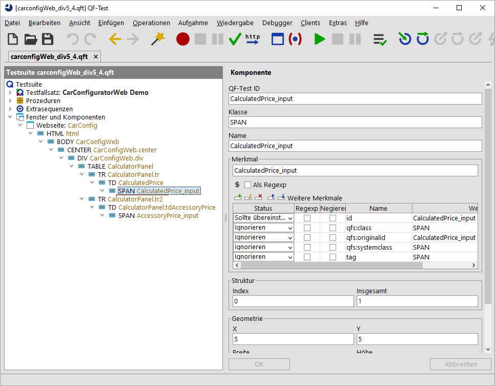
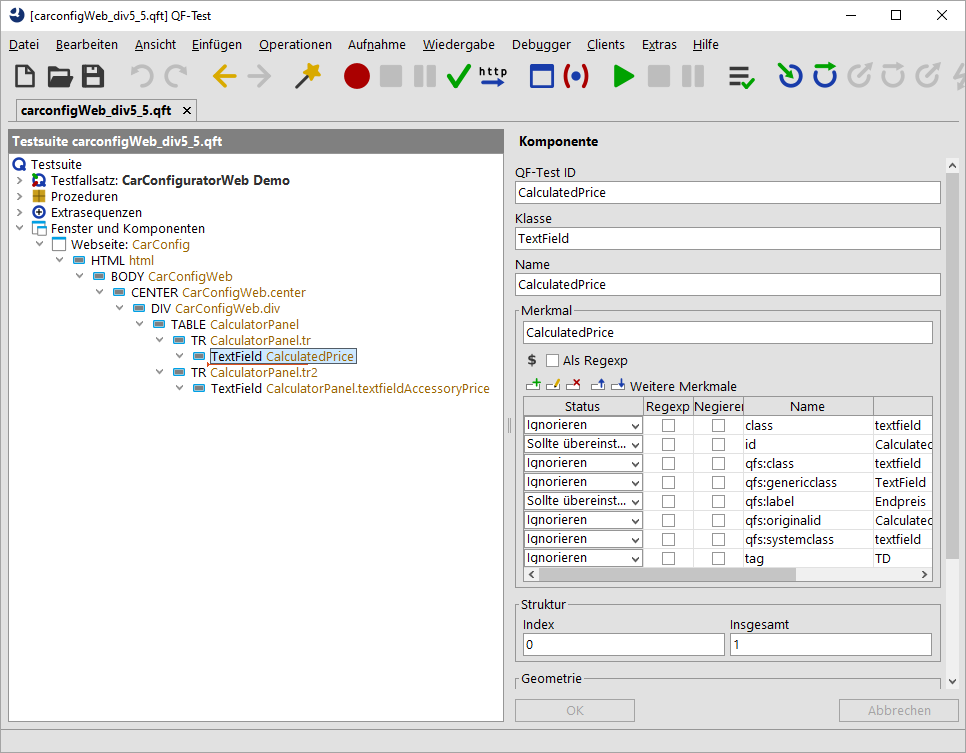

| Version 6.0.3 |
Nach dem einfachen Beispiel im vorherigen Abschnitt, schauen wir uns jetzt ein komplexeres Szenario an. Hierfür versuchen wir die Textfelder, die die Preisinformationen beinhalten, z.B. das Endpreisfeld, zu analysieren. Wie auch vorher sollten wir nun ein paar Mausklicks bzw. Checks auf diese Felder aufzeichnen und uns im Anschluss die aufgezeichneten Komponenten ansehen. Auch hier finden wir die aktuelle Situation und die Zielsetzung in der unteren Tabelle.
|
|
|
||||||
|
| Abbildung 47.10: Verbesserung durch fortgeschrittene Klassenzuweisung | ||||||
Es wurden einige SPAN Knoten aufgezeichnet.
Diese Komponenten haben allerdings kein
class Attribut. Jedoch sehen wir, dass diese
zumindest ein
id Attribut zugewiesen bekommen haben. In diesem
Fall können wir sagen, dass diese id sehr
spezifisch für das jeweilige Textfeld ist. Wenn Sie die
Elternkomponente, den TD Knoten, selektieren,
finden Sie allerdings wieder das class Attribut mit dem Wert
textfield. Wenn diese Komponente selektiert ist,
hebt QF-Test auch das gesamte Textfeld auf der Webseite
hervor. Wir können also annehmen, dass eine solche Komponente mit dem Wert textfield
für das class Attribute für ein echtes Textfeld steht.
|
|  | ||
|
| Abbildung 47.11: Aufzeichnung der SPAN Komponenten | ||
Nun müssen wir wieder die Parameter des Prozeduraufrufes von
qfs.web.ajax.installCustomWebResolver anpassen.
In diesem Fall müssen wir der Klasse textfield von unserer Webseite die generischen
Klasse TextField zuweisen. Hierfür erweitern wir
den Parameter genericClasses auf
textfield=TextField,button=Button. Wie Sie unschwer
erkennen können, kann der Parameter
genericClasses eine kommaseparierte Liste von
Zuweisungen enthalten.
Jetzt löschen Sie die zuvor aufgezeichneten Komponenten,
führen den Prozeduraufruf für
qfs.web.ajax.installCustomWebResolver aus und zeichnen die Komponente nochmals auf.
Jetzt erhalten Sie folgende Aufzeichnung:
|
|  | ||
|
| Abbildung 47.12: Aufzeichnung der Textfelder des WebCarConfigurator | ||
Es wurden die Textfelder, wie erwartet, aufgezeichnet und es gibt sogar eine
Ebene in der Komponentenhierarchie weniger. Zudem haben die
Textfelder jetzt die für QF-Test typischen Attribute, wie das
weitere Merkmal qfs:label.
Hinweis
Wie Sie sehen, wird auch in diesem Beispiel der Parameter genericClasses erweitert.
Sie können die Werte dieses Parameters, wie auch die aller anderen, mittels 'Zeile bearbeiten'
öffnen und nach den Kommas Zeilenumbrüche einfügen.
Dieses Vorgehen verbessert die Lesbarkeit dieser Parameter.
Im nächsten Abschnitt widmen wir uns der Übersetzung von Komponenten, die Daten beinhalten und deren Daten wir gerne direkt ansprechen würden. Solche Komponenten sind typischerweise Tabellen, Bäume oder Listen und werden als komplexe Komponente in QF-Test bezeichnet.
| Letzte Änderung: 6.9.2022 Copyright © 1999-2022 Quality First Software GmbH |